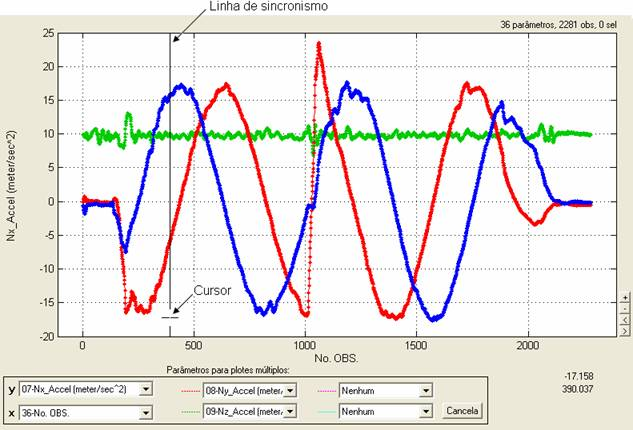
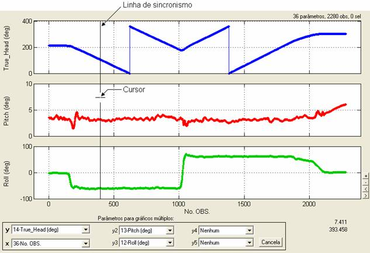

| Menu Exibir |
|
A linha de
sincronismo é uma
ferramenta que auxilia o usuário a identificar o sincronismo dos dados
quando
há múltiplos plotes ou
gráficos em exibição.
Para habilitar a exibição da linha de sincronismo, selecione a opção “Exibir ► Linha de sincronismo”, ou clique no botão na Barra de Ferramentas.
O botão ficará pressionado enquanto a opção estiver
habilitada. Para desabilitá-la, desselecione
a opção ou clique novamente no botão .
A linha
aparecerá quando houver
mais de um plote ou gráfico
ativados (com mesma abscissa) e quando o cursor estiver
sobre um dos
gráficos. A linha acompanha a posição horizontal do cursor no gráfico.
A seguir são
apresentados exemplos
com as funções “Plotes
múltiplos” e “Gráficos
múltiplos”:


Por default, o R_DAT
sempre inicia com a
exibição da linha de sincronismo desabilitada.
| |
Régua |
Etiquetas de
dados |
|